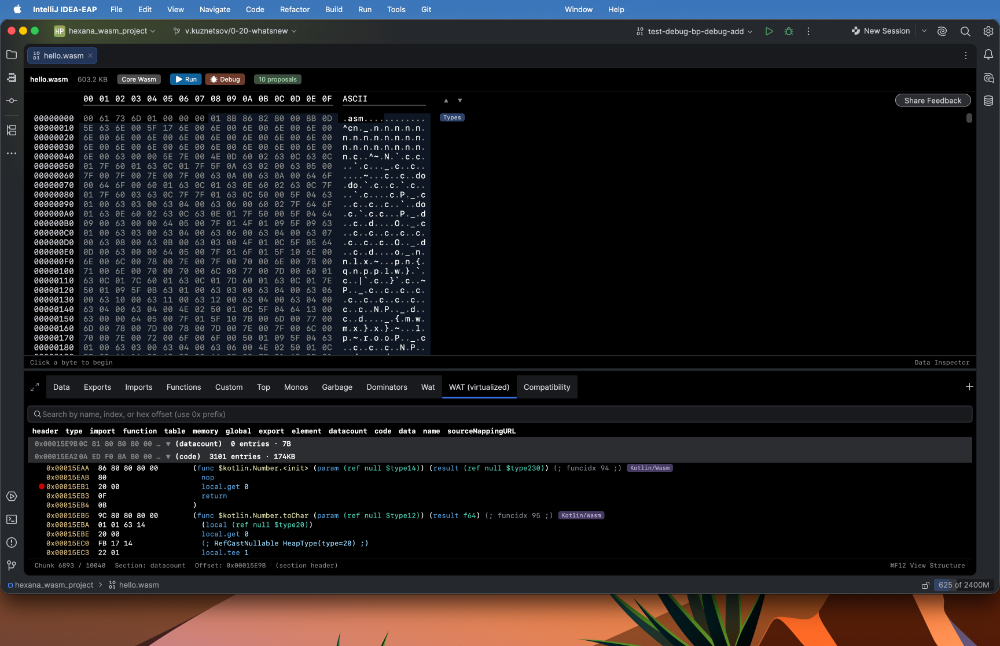
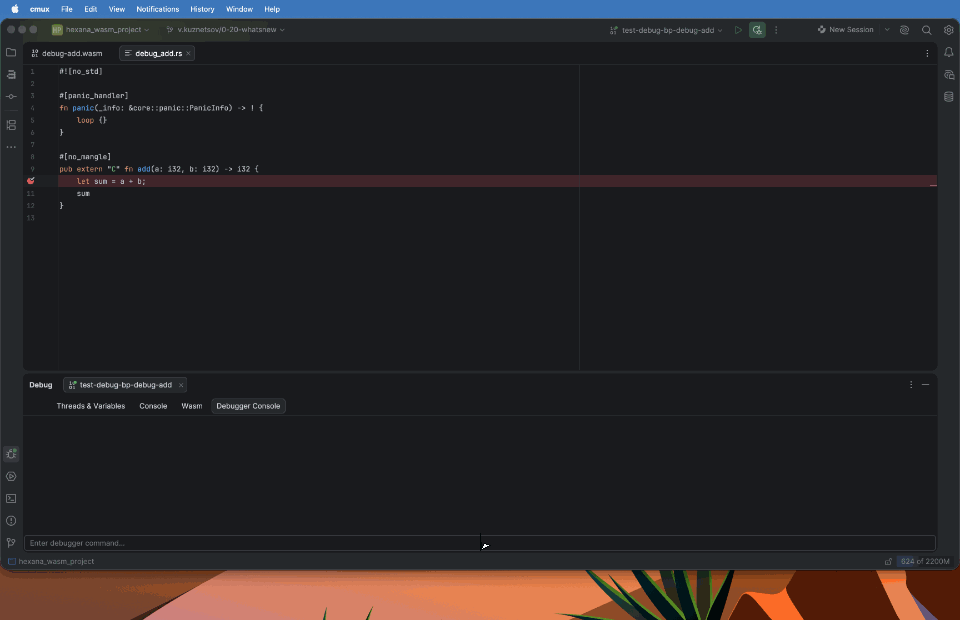
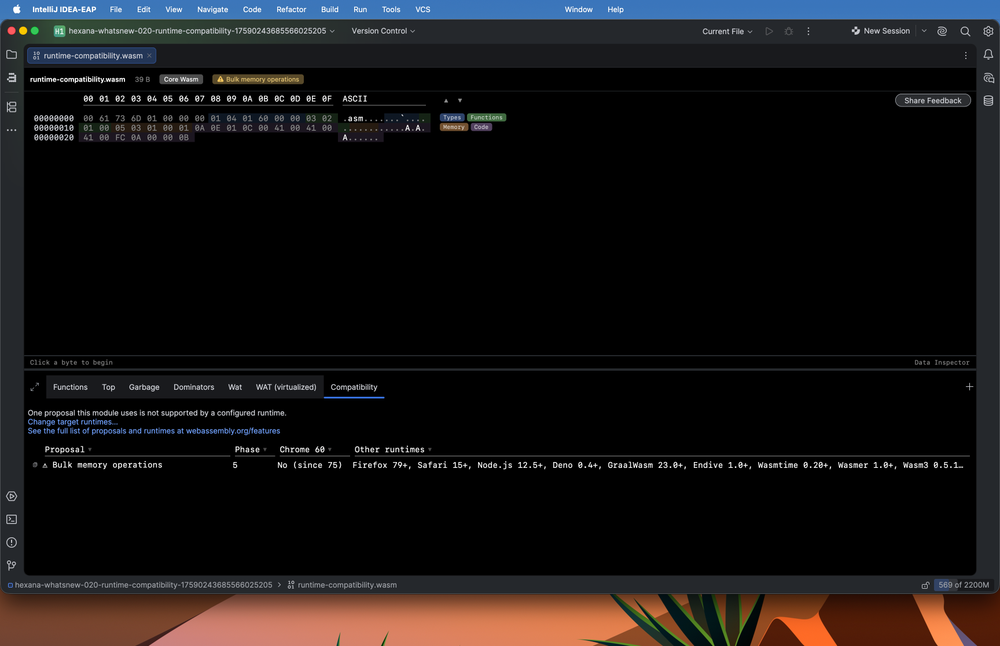
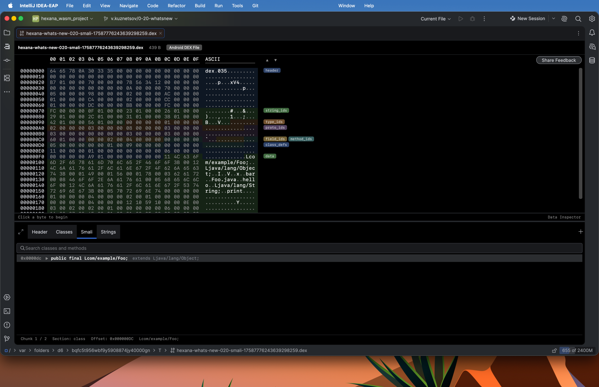
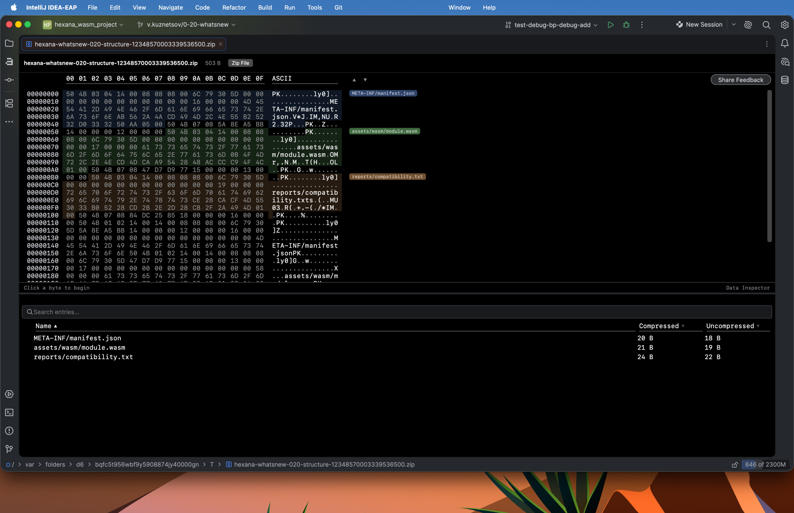

Hexana update
What's New in Hexana 0.20
Hexana 0.20 focuses on Debugging, WebAssembly, and Android DEX while refining binary inspection inside JetBrains IDEs.
Debugging
Keep breakpoints with the binary
Set a breakpoint directly in virtualized WAT or native disassembly before a debug session starts, then carry it with the binary across file moves and IDE restarts.
- Breakpoints in binary views, set without a debug session and materialized when one starts. Click the gutter in the WAT (virtualized) or native Disassembly view; the breakpoint is anchored to the binary's content hash (not its path) and survives restarts.

Debugging
Send debugger commands without losing IDE control
Use an interactive LLDB or GDB console alongside a paused supported debug session, while Hexana keeps execution commands synchronized with the IDE.
- Debugger Console tab: an interactive command line to the underlying debugger — LLDB commands for wasmtime/WAMR/wasmtime-gdbstub sessions, GDB commands for firmware QEMU/Renode. Execution-control commands are routed through the IDE's own actions so the console cannot desync it.

WebAssembly
Check the runtimes your WASM targets
Declare the runtimes a project targets and inspect proposal-level compatibility directly from a WASM file.
- Runtime compatibility for WebAssembly binaries. Declare target runtimes under Settings | Build, Execution, Deployment | WebAssembly | Runtime Compatibility and every
.wasmfile is checked against them: the proposals badge turns into a warning for unsupported proposals and opens a new Compatibility tab. With nothing declared the tab lists which runtimes support each proposal.

Android DEX
Read Android DEX as Smali
Open Android DEX files in a baksmali-style view with resolved operands and byte-linked instruction rows.
- Smali tab for Android
.dexfiles showing baksmali-style Dalvik bytecode with resolved operands and decoded switch/fill-array payloads; clicking an instruction row moves the hex view to that code unit.

Binary structure
See structure across binary formats
Navigate named binary regions in the hex view and the Structure tool window for formats beyond WebAssembly and ELF.
- Structural regions in the hex view for every format Hexana parses — previously WebAssembly and ELF only. Region tinting, labels, prev/next navigation and the Structure tool window now also cover ZIP/JAR and TAR entries,
armembers, COFF sections, DEX id tables, PCAP/PCAP-NG.
